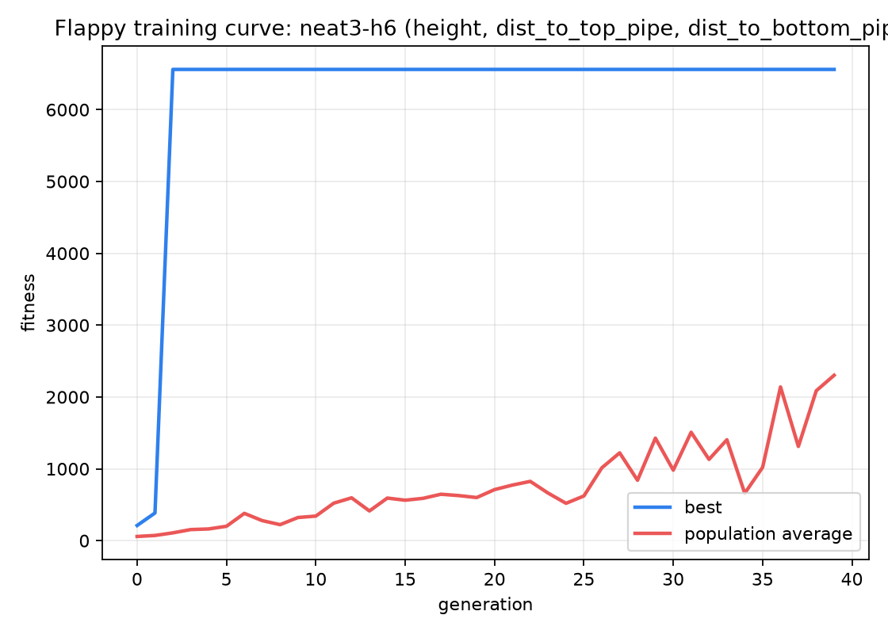
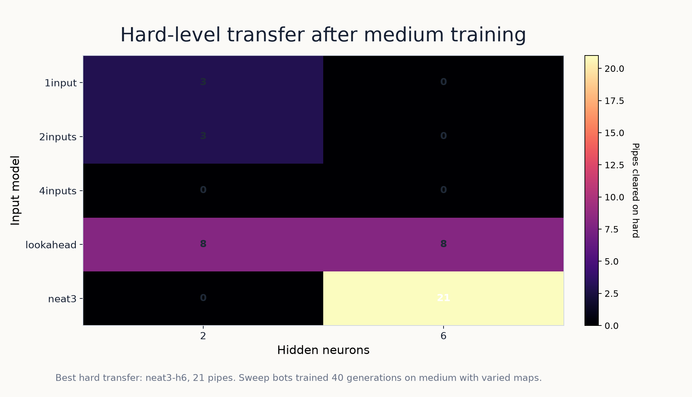
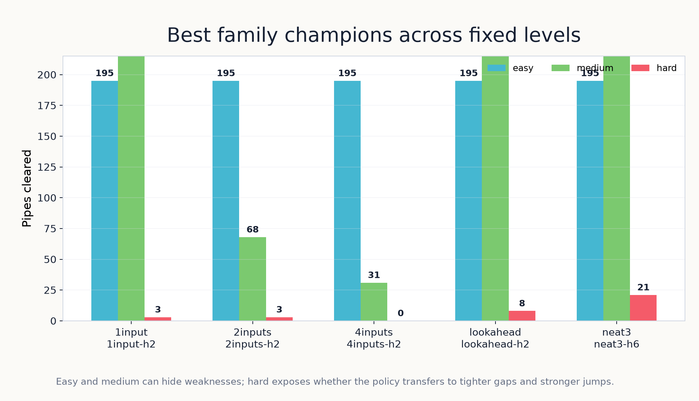
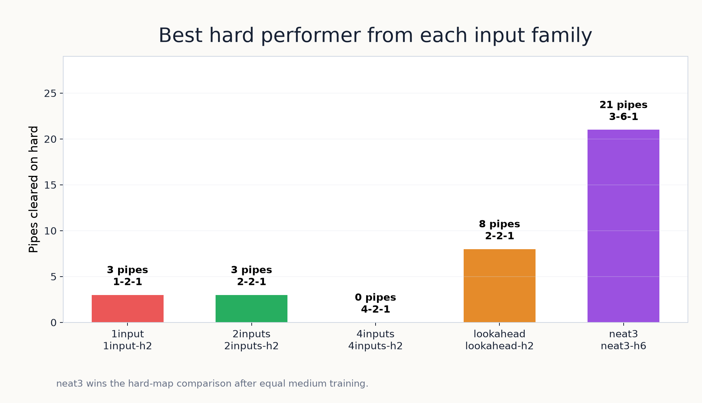
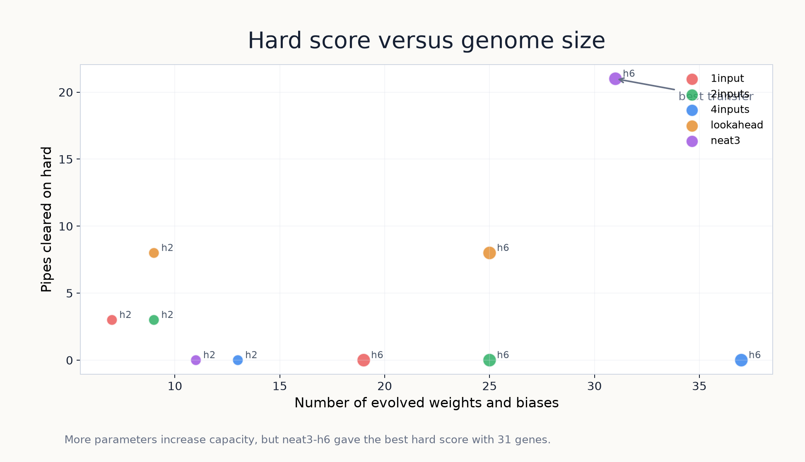
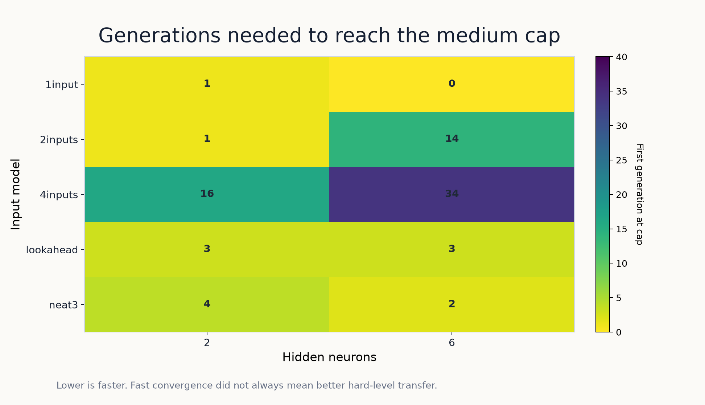
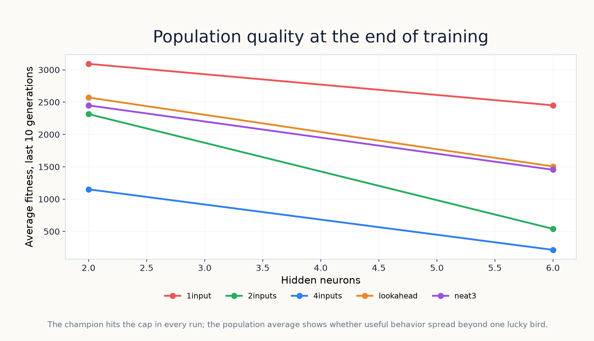

We evolved neural-network birds with a genetic algorithm, then compared input choices and hidden-layer sizes on the same game engine.
We evolved neural-network birds with a genetic algorithm, then compared input choices and hidden-layer sizes on the same game engine.
Evidence: saved genomes and training plots from ai_quest/part_2_flappy/assets/plots
dy_to_gap. The bot only knows whether it sits above or below the current pipe gap.
velocity plus dy_to_gap. This acts like a simple proportional-derivative controller.
Height, velocity, pipe distance, and dy_to_gap. More context, but a bigger search space.
dy_to_gap plus dy_to_nextgap. It sees where the next gap will be.
height, dist_to_top_pipe, and dist_to_bottom_pipe. This mirrors the common NEAT-style Flappy setup.
Each family trained at hidden-layer sizes 2 and 6: 10 sweep champions total.
Every saved *-h2 and *-h6 champion reached
fitness 6560 after 40 generations on medium with a new map each generation.

Example curve: neat3 with 6 hidden neurons finds a champion quickly, while the population average keeps moving because maps vary and mutation continues.

The hard map exposes the difference between memorizing enough medium behavior and actually transferring to tighter pipes.
neat3-h6 is the clear outlier in this sweep: 21 pipes on hard.lookahead remains competitive, but the 40-generation h2/h6 sweep favored the NEAT-style geometry model.Scores from tools/roster.py using fixed level maps: easy seed 11, medium seed 22, hard seed 33.



The best sweep performer uses pipe-edge geometry with 6 hidden neurons: neat3-h6.


The 4-input bots solved medium, but their extra signals created a larger genome. Evolution had more weights to tune and more ways for mutation to damage behavior.
height, dist_to_top_pipe, and dist_to_bottom_pipe gave the best hard score in this 40-generation sweep: neat3-h6.
Six hidden neurons helped neat3, but hurt or failed to improve other families. Capacity only helps when the inputs make the search useful.
Every bot reached the medium cap, but many failed on the fixed hard map. Evaluation needs held-out maps or a hard-level sweep.
Keep neat3 and lookahead as the main candidates, then evaluate both across several unseen hard maps before saving the final winner.
python tools/sweep.py --models neat3 lookahead --hidden-sizes 2 6 --generations 100 --level hard
Then race the strongest shapes in arena mode and record held-out scores from tools/roster.py.
Current best from the 40-generation medium sweep: neat3-h6, 21 pipes on hard.